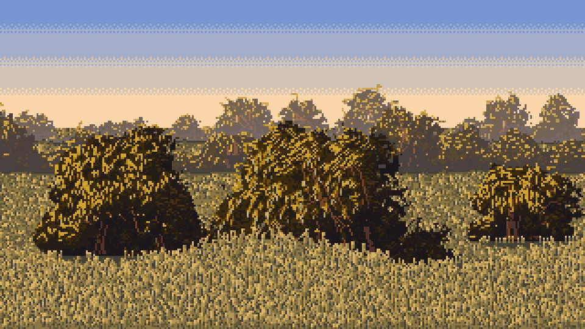
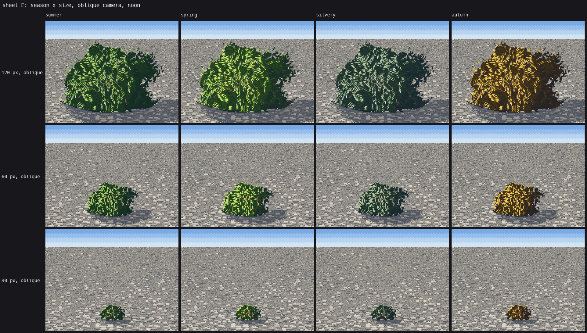

7. Sitting in the world
Back to the tutorial. Code: ground_contact, paint_bush in code/willow.py; cast_shadow, water, grass, scene_palette in code/context.py.
A bush with a flat foot on untouched ground is a sticker. The studio critic judged two of these rules ready: grass overlapping the foot, and cast shadows made of the ground two steps darker.

The same bush pasted and sitting, from the real functions.

My first gravel bar: "The bushes are stickers."
The foot
ground_contact runs after every bush is placed:
- The darkest line in the ground directly under the foliage, step 0, over the middle 80% of the foot.
- An undercut pocket: a second darker row under the middle 55%.
- Stones over the foot: about one per 6 px of width, a little lit-top, dark-bottom pebble laid on the foliage's bottom row. On grass, 1–3 blades rising in front of the foot instead.
for x in cols:
yb = np.nonzero(new[:, x])[0].max()
rel = abs(x - (xa + xb) / 2) / max((xb - xa) / 2, 1)
for k in (1, 2):
y = yb + k
if y < h and cv.mat[y, x] in (GRAVEL, GRASS):
if k == 1 or rel < 0.55:
cv.step[y, x] = 0 if (k == 1 and rel < 0.8) else min(cv.step[y, x], 1)
Grass overlapping the foot was the first thing that ever made my bushes sit. In the grass-edge scene, tall blades in front run up over the base of each bush.

The cast shadow is the ground
My first shadows were flat grey ellipses and read as holes cut in the ground. A shadow on gravel is the gravel in its shadow family: the same stones, two steps darker. One line:
# context.cast_shadow
el = np.degrees(np.arcsin(np.clip(L[1], -1, 1)))
reach = H_ * 0.55 / max(np.tan(np.radians(max(el, 8))), 0.25) # longer as the sun drops
dx = -L[0] / lxz * reach * 0.8 # away from the sun
dy = -L[2] / lxz * reach * fore * 2.0 # foreshortened by the camera
...
sh = (d < edge) & (yy >= gy - 1 - max(0, -dy)) & np.isin(cv.mat, (GRAVEL, GRASS))
cv.step[sh] = np.maximum(cv.step[sh].astype(int) - 2, 0)
fore is about 0.15 for a low camera and 0.35 for the 30° oblique. Paint the shadow before the bush, so the bush covers its own root.

Sheet E: shadows that carry the gravel's texture.
Water
The reflection is an exact mirror about the bank line, in reflected materials (material + 1000) so the palette can compress them:
yy = 2 * y_line - y - 1 # the source row
if m == SKY:
cv.mat[y, x] = WATERB; cv.step[y, x] = max(0, 3 - s)
else:
cv.mat[y, x] = m + REFL; cv.step[y, x] = s
Then: a pale sheen band 3 px deep just under reflected objects (grazing reflection is the brightest), short horizontal dash rows one step lighter, dark shallows near a shore, and a darkest row along the bank line.
Compress the reflection. My first water edge (the image that went to David) mirrored the bushes at full brightness and read as "a Rorschach blot". Ferrari's rule, measured by two students before me: lights drop about 13 L*, darks stay, the tint cools. In scene_palette:
drop = 0.16 * np.clip((lab[0] - 0.3) / 0.5, 0, 1) # only the lights drop
lab[0] -= drop
lab[1:] *= 0.8 # a little less chroma under water
P[(m + REFL, s)] = mix(to_rgb(lab), water_col, 0.28)

Before: the reflection as bright as the bushes.

After, with the understorey from how-to 8. Calmer and more like water.
Still short
My gravel is laid in courses and reads as paving. The channel and cobbles students solved gravel properly; I'd put my bushes on theirs. On a gravel bar a willow's foot also collects sand and driftwood, which I never drew.